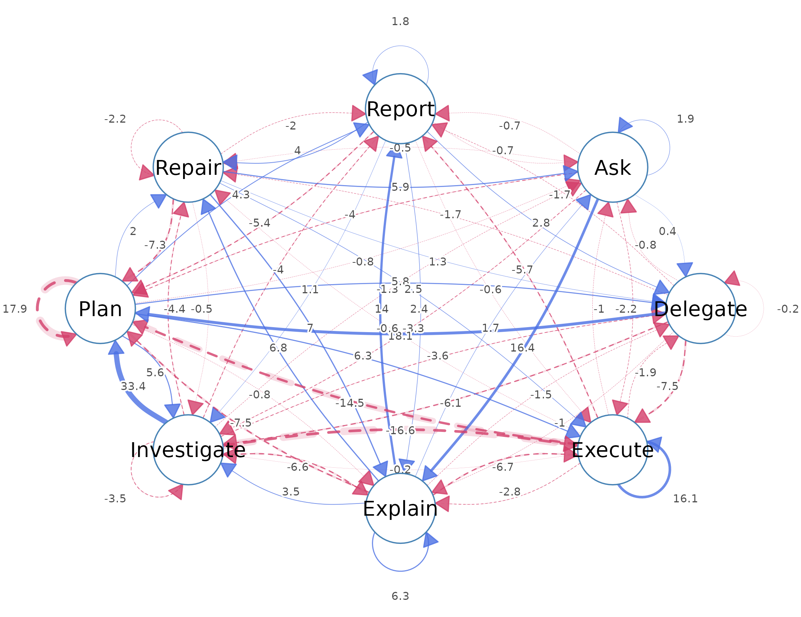
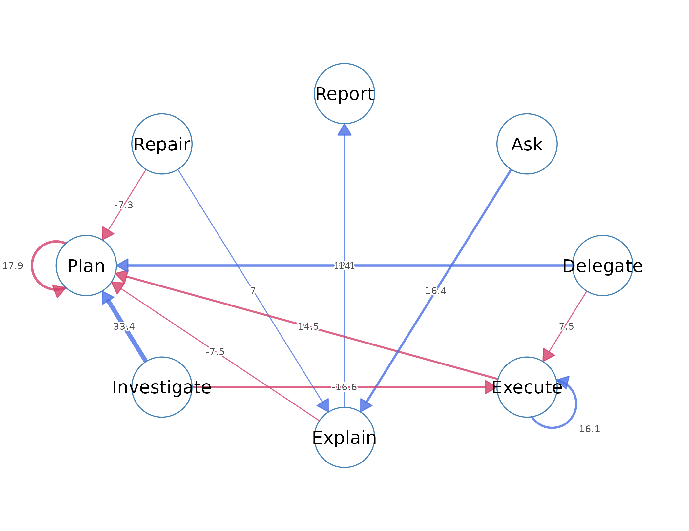
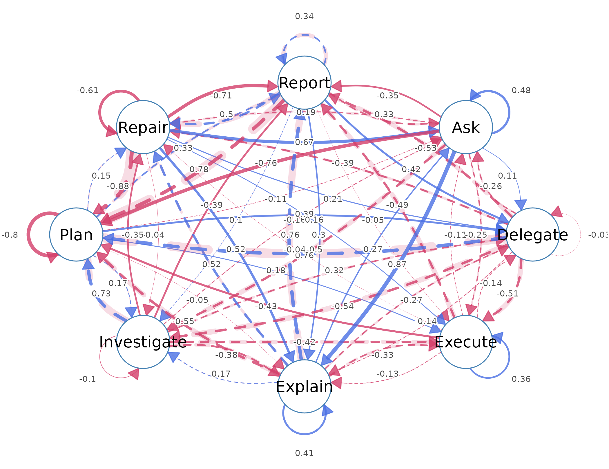
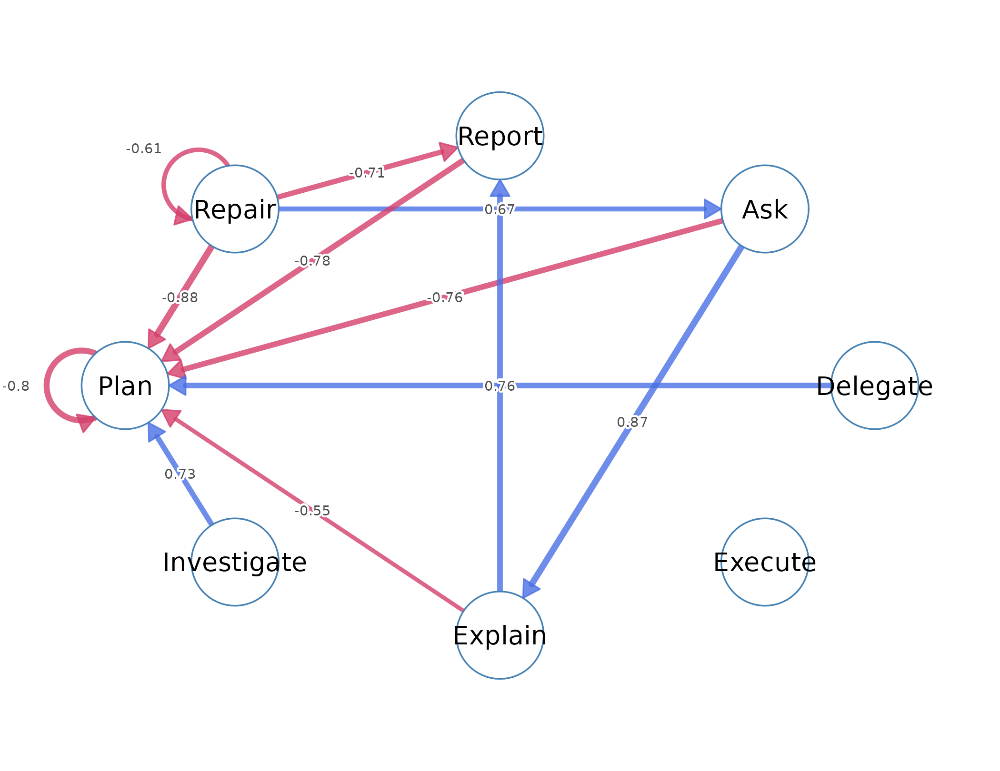
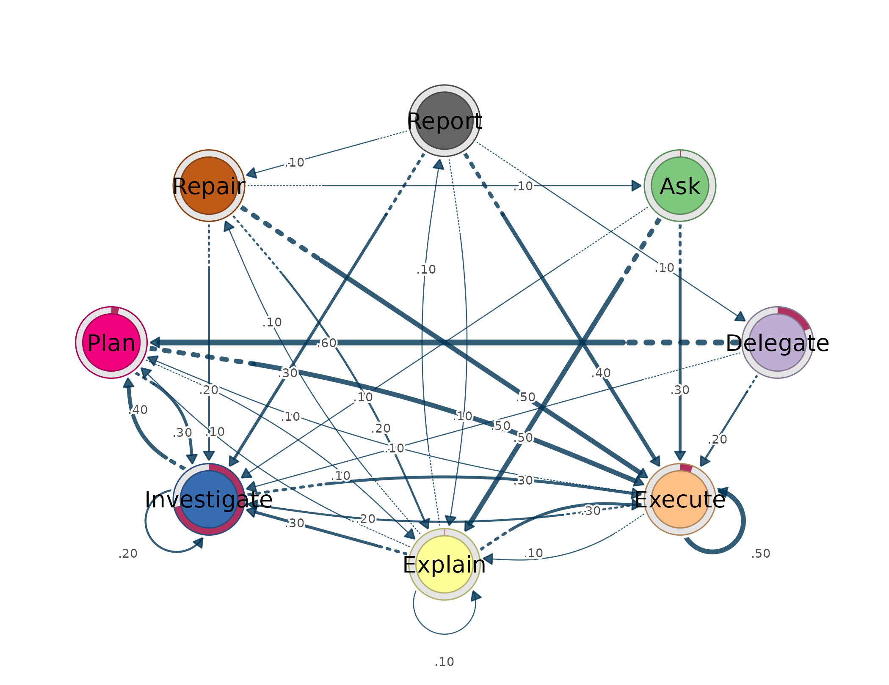

Lag-sequential analysis studies the order in which categorical events occur. Given a series of events, the method examines pairs that follow one another and tests whether a given event is followed by another event more or less often than the order of events alone would predict. The event types become the states of the process, and the transitions between them become the object of analysis. A lag transition network is the representation of these tested transitions: the states are nodes, a directed edge from one state to another represents the transition between them, and the weight on the edge measures how far the observed transition departs from what independence would predict.
The method rests on a comparison between two quantities for every ordered pair of states. The observed count is the number of times the first state is immediately followed by the second. The expected count is the number that would occur if the next state did not depend on the current one, and it is built from the base rates of the two states alone. The adjusted residual expresses the difference between the two on a standardised scale. A positive residual identifies a transition that occurs more often than expected, which marks a behavioural regularity above the base rates of its states. A negative residual identifies a transition that occurs less often than expected, which marks an avoidance. A residual near zero identifies a transition that occurs about as often as chance predicts. This tutorial develops these quantities, fits a model to a real data set, and interprets the network that results.
The data and the fitted model
The ai_long data set is a long-format event log of coded
AI-side actions in human–AI coding sessions, with one row per event.
data(ai_long)
head(ai_long)
#> message_id project session_id timestamp session_date code cluster
#> 1 3441 Project_7 0086cabebd15 1772661600 2026-03-05 Delegate Action
#> 2 3441 Project_7 0086cabebd15 1772661600 2026-03-05 Plan Repair
#> 3 3443 Project_7 0086cabebd15 1772661600 2026-03-05 Execute Action
#> 4 3443 Project_7 0086cabebd15 1772661600 2026-03-05 Plan Repair
#> 5 3445 Project_7 0086cabebd15 1772661600 2026-03-05 Execute Action
#> 6 3447 Project_7 0086cabebd15 1772661600 2026-03-05 Investigate Action
#> code_order order_in_session
#> 1 1 5
#> 2 2 6
#> 3 1 8
#> 4 2 9
#> 5 1 12
#> 6 1 14Four columns enter the analysis. The code column holds
the action, the event type whose transitions are modelled. The
order_in_session column orders events within a session. The
session_id column identifies one uninterrupted sequence,
and the project column groups the sessions. Transitions are
counted within a session only, so the last event of one session and the
first of the next are never treated as a pair; the session
argument enforces this boundary.
The lsa() function fits the model, taking the four
columns as named arguments.
fit <- lsa(ai_long,
actor = "project",
session = "session_id",
action = "code",
order = "order_in_session")
fit
#> Lag Sequential Analysis — classical (lag 1, directed)
#> 8 states | 8123 transitions | 8551 events | 428 sequences
#> states: Ask, Delegate, Execute, Explain, Investigate, Plan, Repair, Report
#> independence: G² = 2168.1, df = 49, p <2e-16
#>
#> Significant transitions (p < 0.05): 40 of 64
#> strongest over-represented (of 19):
#> Investigate -> Plan z = +33.4 ***
#> Delegate -> Plan z = +18.1 ***
#> Ask -> Explain z = +16.4 ***
#> Execute -> Execute z = +16.1 ***
#> Explain -> Report z = +14.0 ***
#> ... and 14 more
#>
#> Initial states:
#> Investigate 0.715 ████████████████████████
#> Delegate 0.185 ██████
#> Execute 0.058 ██
#> Plan 0.035 █
#> Ask 0.005
#> Explain 0.002
#> Repair 0.000
#> Report 0.000The printed model reports the number of states, transitions, and
sequences, the omnibus test of independence, the strongest
over-represented transitions, and the initial-state distribution. The
ai_long process has 8 states and 8123 within-session
transitions drawn from 428 sessions, so the model estimates a compact
8-by-8 transition system from a large number of observed moves; the
residuals it reports are therefore repeated tendencies in the process
rather than isolated episodes.
Reading the model
The fitted model exposes its contents through accessor functions, each of which returns a table.
The initial-state distribution records the share of sessions that begin in each state.
initial(fit)
#> state init_prob
#> 1 Ask 0.00467
#> 2 Delegate 0.18458
#> 3 Execute 0.05841
#> 4 Explain 0.00234
#> 5 Investigate 0.71495
#> 6 Plan 0.03505
#> 7 Repair 0.00000
#> 8 Report 0.00000The initial-state distribution places most of its mass on
Investigate, whose value of 0.715 means that about 71% of
sessions begin with an investigation action. Delegate
begins 18% of sessions and Execute 6%, while
Repair and Report never begin a session. The
process almost always opens by gathering information.
Node activity records how often each state sends and receives transitions.
nodes(fit)
#> state outgoing incoming
#> 1 Ask 91 97
#> 2 Delegate 280 216
#> 3 Execute 3090 3233
#> 4 Explain 504 523
#> 5 Investigate 2235 2011
#> 6 Plan 1510 1605
#> 7 Repair 251 257
#> 8 Report 162 181Execute sends 3090 transitions and receives 3233, more
than any other state, which makes it the most frequently visited state
in the process. Ask, Report, and
Explain are visited rarely. The magnitude of these totals
is exactly what the expected-count calculation controls for, so that a
busy state is not credited with meaningful transitions merely for being
busy.
The omnibus test evaluates the whole table against independence and is the first result to consult.
tests(fit)
#> test statistic df p
#> 1 lrx2 2168 49 0
#> 2 x2 2485 49 0The likelihood-ratio statistic is on 49 degrees of freedom, with a p-value below machine precision. The order of actions is therefore not random: the next action depends on the current one. A non-significant omnibus test would remove any basis for interpreting individual transitions, so it is checked before them.
The transitions() function returns one row per directed
edge. Its direction argument selects over- or
under-represented transitions and its sort argument orders
them by strength.
transitions(fit, direction = "over", sort = "strength")
#> from to lag count expected prob prob_col adj_res p
#> 1 Investigate Plan 1 977 441.61 0.4371 0.6087 33.41 1.11e-244
#> 2 Delegate Plan 1 174 55.32 0.6214 0.1084 18.13 1.96e-73
#> 3 Ask Explain 1 44 5.86 0.4835 0.0841 16.38 2.56e-60
#> 4 Execute Execute 1 1575 1229.84 0.5097 0.4872 16.12 1.98e-58
#> 5 Explain Report 1 56 11.23 0.1111 0.3094 13.95 3.12e-44
#> 6 Repair Explain 1 43 16.16 0.1713 0.0822 7.01 2.36e-12
#> 7 Explain Repair 1 42 15.95 0.0833 0.1634 6.85 7.59e-12
#> 8 Plan Execute 1 709 600.99 0.4695 0.2193 6.29 3.10e-10
#> 9 Explain Explain 1 66 32.45 0.1310 0.1262 6.29 3.24e-10
#> 10 Repair Ask 1 13 3.00 0.0518 0.1340 5.90 3.54e-09
#> 11 Plan Delegate 1 73 40.15 0.0483 0.3380 5.82 5.78e-09
#> 12 Plan Investigate 1 458 373.83 0.3033 0.2277 5.56 2.66e-08
#> 13 Plan Report 1 56 33.65 0.0371 0.3094 4.32 1.56e-05
#> 14 Report Repair 1 14 5.13 0.0864 0.0545 4.02 5.73e-05
#> 15 Explain Investigate 1 158 124.77 0.3135 0.0786 3.54 3.99e-04
#> 16 Report Delegate 1 10 4.31 0.0617 0.0463 2.81 4.99e-03
#> 17 Repair Execute 1 119 99.90 0.4741 0.0368 2.50 1.23e-02
#> 18 Report Explain 1 18 10.43 0.1111 0.0344 2.45 1.44e-02
#> 19 Plan Repair 1 60 47.77 0.0397 0.2335 1.99 4.64e-02
#> yules_q kappa kappa_z kappa_p lift sign significant
#> 1 0.734 0.4556 33.41 1.15e-244 2.21 over TRUE
#> 2 0.761 0.4940 17.86 2.49e-71 3.15 over TRUE
#> 3 0.873 0.4082 15.99 1.56e-57 7.51 over TRUE
#> 4 0.358 0.1655 15.30 7.73e-53 1.28 over TRUE
#> 5 0.765 0.2643 14.07 6.11e-45 4.99 over TRUE
#> 6 0.522 0.1130 7.20 6.20e-13 2.66 over TRUE
#> 7 0.516 0.1088 6.93 4.15e-12 2.63 over TRUE
#> 8 0.178 0.0915 5.21 1.84e-07 1.18 over TRUE
#> 9 0.405 0.0689 6.37 1.88e-10 2.03 over TRUE
#> 10 0.670 0.1044 5.93 2.94e-09 4.34 over TRUE
#> 11 0.394 0.0716 2.59 9.67e-03 1.82 over TRUE
#> 12 0.173 0.0161 1.18 2.37e-01 1.23 over TRUE
#> 13 0.333 0.1480 4.16 3.16e-05 1.66 over TRUE
#> 14 0.501 0.0488 3.77 1.66e-04 2.73 over TRUE
#> 15 0.174 0.0419 1.62 1.04e-01 1.27 over TRUE
#> 16 0.425 0.0215 1.55 1.22e-01 2.32 over TRUE
#> 17 0.159 0.1325 2.75 5.97e-03 1.19 over TRUE
#> 18 0.297 0.0407 2.16 3.05e-02 1.73 over TRUE
#> 19 0.148 0.0543 1.83 6.75e-02 1.26 over TRUEInvestigate -> Plan is the strongest over-represented
transition. It occurred 977 times, its transition probability is 0.44,
and its adjusted residual is 33.4. The probability means that planning
follows investigation 44% of the time, and the lift of 2.21 means this
is 2.2 times more often than independence predicts; investigation is
regularly converted into planning. Ask -> Explain
carries a lift of 7.51, so asking is followed by explaining about seven
times more often than chance. Execute -> Execute has a
probability of 0.51, so execution is followed by execution about half
the time and tends to occur in runs. Delegate -> Plan
and Explain -> Report describe related regularities.
transitions(fit, direction = "under", sort = "strength")
#> from to lag count expected prob prob_col adj_res p
#> 1 Plan Plan 1 49 298.36 0.03245 0.03053 -17.86 2.36e-71
#> 2 Investigate Execute 1 563 889.54 0.25190 0.17414 -16.57 1.07e-61
#> 3 Execute Plan 1 358 610.54 0.11586 0.22305 -14.50 1.30e-47
#> 4 Delegate Execute 1 51 111.44 0.18214 0.01577 -7.51 5.92e-14
#> 5 Explain Plan 1 35 99.58 0.06944 0.02181 -7.46 8.65e-14
#> 6 Repair Plan 1 4 49.59 0.01594 0.00249 -7.34 2.10e-13
#> 7 Explain Execute 1 129 200.59 0.25595 0.03990 -6.73 1.73e-11
#> 8 Investigate Explain 1 79 143.90 0.03535 0.15105 -6.57 5.04e-11
#> 9 Delegate Investigate 1 26 69.32 0.09286 0.01293 -6.10 1.03e-09
#> 10 Execute Report 1 32 68.85 0.01036 0.17680 -5.71 1.16e-08
#> 11 Report Plan 1 5 32.01 0.03086 0.00312 -5.38 7.31e-08
#> 12 Investigate Repair 1 40 70.71 0.01790 0.15564 -4.36 1.30e-05
#> 13 Investigate Report 1 26 49.80 0.01163 0.14365 -4.01 6.17e-05
#> 14 Ask Plan 1 3 17.98 0.03297 0.00187 -3.97 7.30e-05
#> 15 Investigate Delegate 1 36 59.43 0.01611 0.16667 -3.62 2.96e-04
#> 16 Investigate Investigate 1 493 553.32 0.22058 0.24515 -3.47 5.16e-04
#> 17 Ask Investigate 1 9 22.53 0.09890 0.00448 -3.30 9.52e-04
#> 18 Execute Explain 1 169 198.95 0.05469 0.32314 -2.79 5.29e-03
#> 19 Ask Execute 1 26 36.22 0.28571 0.00804 -2.20 2.78e-02
#> 20 Repair Repair 1 2 7.94 0.00797 0.00778 -2.18 2.95e-02
#> 21 Repair Report 1 1 5.59 0.00398 0.00552 -2.00 4.60e-02
#> yules_q kappa kappa_z kappa_p lift sign significant
#> 1 -0.803 -0.840 -18.16 1.04e-73 0.1642 under TRUE
#> 2 -0.423 -0.362 -16.02 9.06e-58 0.6329 under TRUE
#> 3 -0.431 -0.420 -14.73 4.13e-49 0.5864 under TRUE
#> 4 -0.508 -0.546 -7.49 6.85e-14 0.4576 under TRUE
#> 5 -0.553 -0.647 -7.39 1.42e-13 0.3515 under TRUE
#> 6 -0.881 -0.918 -7.22 5.10e-13 0.0807 under TRUE
#> 7 -0.333 -0.354 -6.56 5.42e-11 0.6431 under TRUE
#> 8 -0.380 -0.444 -6.39 1.67e-10 0.5490 under TRUE
#> 9 -0.536 -0.675 -7.19 6.49e-13 0.3751 under TRUE
#> 10 -0.489 -0.536 -5.72 1.08e-08 0.4648 under TRUE
#> 11 -0.775 -0.854 -5.62 1.96e-08 0.1562 under TRUE
#> 12 -0.355 -0.426 -4.22 2.41e-05 0.5657 under TRUE
#> 13 -0.393 -0.470 -3.90 9.82e-05 0.5221 under TRUE
#> 14 -0.759 -0.840 -4.06 4.82e-05 0.1668 under TRUE
#> 15 -0.317 -0.550 -5.86 4.72e-09 0.6057 under TRUE
#> 16 -0.102 -0.215 -7.38 1.58e-13 0.8910 under TRUE
#> 17 -0.503 -0.664 -4.05 5.03e-05 0.3995 under TRUE
#> 18 -0.133 -0.154 -2.85 4.44e-03 0.8495 under TRUE
#> 19 -0.249 -0.311 -2.44 1.47e-02 0.7179 under TRUE
#> 20 -0.613 -0.741 -2.12 3.37e-02 0.2518 under TRUE
#> 21 -0.708 -0.816 -1.95 5.08e-02 0.1788 under TRUEPlan -> Plan is the strongest under-represented
transition, with an adjusted residual of -17.9 and a lift of 0.16.
Planning is therefore very rarely repeated immediately: a planning
action is followed by another planning action only about one-sixth as
often as expected. The result does not mean planning is uncommon; it
means planning is normally followed by a different action.
Investigate -> Execute (residual -16.6) is also
under-represented, so investigation seldom leads straight to execution.
Read together with the over-represented
Investigate -> Plan, these avoidances show a separation
between gathering information and acting on it, with a planning step in
between.
The network
The network represents each state as a node and each transition as a directed edge, with edge width proportional to the weight and an edge that loops to its own node marking a self-transition. Three networks can be drawn from the same model, differing in the quantity they place on the edges. The two lag-sequential networks come first: the residual network, whose edges are signed adjusted residuals (blue over-represented, red avoided), and the Yule’s Q network, which shows the same signed departures on a fixed scale that does not grow with sample size. The probability network, which is the Transition Network Analysis view, comes last.
The residual network draws the tested departures from independence. The full network draws every edge:
plot_transitions(fit, weights = "residuals", decimals = 1)
Because a residual grows with sample size and the data set has many
transitions, most edges are significant and the full network is dense.
The top argument keeps the strongest edges by absolute
residual:
plot_transitions(fit, weights = "residuals", top = 12, decimals = 1)
The pruned residual network has a directed shape that the edge
weights make explicit. Investigate -> Plan is the
heaviest edge (residual 33.4), and its reverse
Plan -> Investigate is also over-represented (residual
5.6); investigation and planning therefore form a mutual pair.
Plan -> Execute then runs forward (residual 6.3), while
its reverse Execute -> Plan is red (residual -14.5), so
the link from planning to execution is one-directional.
Execute -> Execute is a heavy self-loop (residual 16.1),
so the process remains in execution once it arrives. The red edges
Plan -> Plan and Investigate -> Execute
confirm that planning does not repeat and that investigation does not
jump straight to execution.
The Yule’s Q network shows the same signed departures on a bounded
scale, so its edge values are comparable across datasets and across
groups of different sizes. The full network again draws every edge, and
top keeps the strongest:
plot_transitions(fit, weights = "yules_q", decimals = 2)
plot_transitions(fit, weights = "yules_q", top = 12, decimals = 2)
The Yule’s Q network preserves the shape of the residual network, the same over-represented and avoided edges, but its weights are bounded association values rather than test statistics, which is the form to use when the networks of two groups are to be compared.
The probability network draws the same transitions weighted by , the share of moves out of a state that reach each destination. This is the network of Transition Network Analysis (TNA); a thin ring around each node shows the initial probability of starting in that state.
plot_transitions(fit, weights = "prob")
The probability network foregrounds the most frequent transitions:
Delegate -> Plan (0.62),
Execute -> Execute (0.51),
Ask -> Explain (0.48), Plan -> Execute
(0.47), and Investigate -> Plan (0.44). It is not
equivalent to the lag-sequential networks. A transition probability lies
between 0 and 1, records how often a transition occurs, and reaches its
smallest value at zero, so it cannot represent a transition that occurs
less often than expected. A signed residual or Yule’s Q can. The
under-represented edges of the residual network, such as
Execute -> Plan, have no counterpart in the probability
network. The probability network describes where the process goes; the
lag-sequential networks identify which transitions depart from chance,
and in which direction.
Inference
The adjusted residual is an analytic test, and its conclusions can be checked against the data by resampling. The bootstrap resamples whole sequences with replacement, refits the model on each resample, and records a confidence interval for every edge together with whether the edge keeps its sign.
boot <- bootstrap_lsa(fit, R = 1000)
boot
#> <lsa_bootstrap>
#> engine: classical
#> level: sequence
#> replicates: 1000
#> CI level: 95%
#> stable edges: 41 of 64The bootstrap finds 43 of the 64 possible edges to be stable, meaning their sign is preserved across the resamples. A stable edge can be reported with confidence, whereas an unstable edge might not reappear in a new sample even when its residual is large.
Analytic certainty offers a closed-form alternative to the bootstrap.
The certainty_lsa() function models each state’s outgoing
transitions as Dirichlet–Multinomial, which yields a posterior
distribution, a credible interval, and a certainty decision for each
transition probability without resampling.
cert <- certainty_lsa(fit)
cert
#> <lsa_certainty> (analytic Dirichlet-Multinomial)
#> engine: classical
#> prior: Dirichlet(0.50)
#> CI level: 95% | inference: stability
#> certain edges: 26 of 64Analytic certainty classifies 26 of 64 edges as certain, meaning their transition probabilities are estimated precisely. The bootstrap and the analytic estimate agree on the overall picture: the frequent transitions are estimated with confidence, and the rare transitions are not.
Summary
The analysis of ai_long establishes that the order of
actions is not random
(,
)
and that the process has a definite shape. Sessions almost always begin
in Investigate (initial probability 0.71).
Investigate and Plan form a mutual pair, feed
forward into Execute through the one-directional
Plan -> Execute, and terminate in Execute,
which is the busiest state (in-strength 2.30), occurs in runs
(Execute -> Execute, probability 0.51), and rarely
returns to planning. Planning does not repeat
(Plan -> Plan, residual -17.9) and investigation seldom
leads straight to execution (Investigate -> Execute,
residual -16.6), so a planning step separates information gathering from
acting on it. Of the 64 possible transitions, 40 are significant, 43 are
sign-stable under the bootstrap, and 26 are certain under the Bayesian
estimate, so a transition merits reporting when it is significant,
sizeable, and reproducible. The residual network and the probability
network remain complementary throughout: the probability network
describes where the process tends to go, and the residual network
identifies which transitions occur more or less often than chance.
References
Bakeman, R., & Gottman, J. M. (1997). Observing interaction: An introduction to sequential analysis (2nd ed.). Cambridge University Press.
Haberman, S. J. (1973). The analysis of residuals in cross-classified tables. Biometrics, 29(1), 205–220.
Saqr, M., López-Pernas, S., & Tikka, S. (2025). Mapping relational dynamics with transition network analysis: A primer and tutorial. In Advanced Learning Analytics Methods and Tutorials.